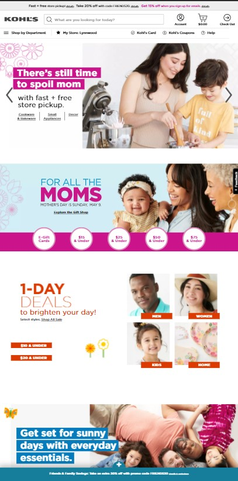

The Law of Proximity - Related Elements
Kohl's "Clothing Store"
Kohls.com This shows an excellent example of how proximity can be used by a company to help a user can narrow what they want on a site.
The Law of White Space and Clean Design
Philips Healthcare
Philips.comThis shows how white space or clean design can help a person see the most important thing. That would be the 'Celebrate Mom' and the 'Shop Now.' Another thing that is important is the 2-5 business day delivery.
The Law of White Space and Clean Design
Edmonds Heights K-12
Edmonds Heights K-12This shows how difficult a site can be to navigate when there is little white space between different sctions.